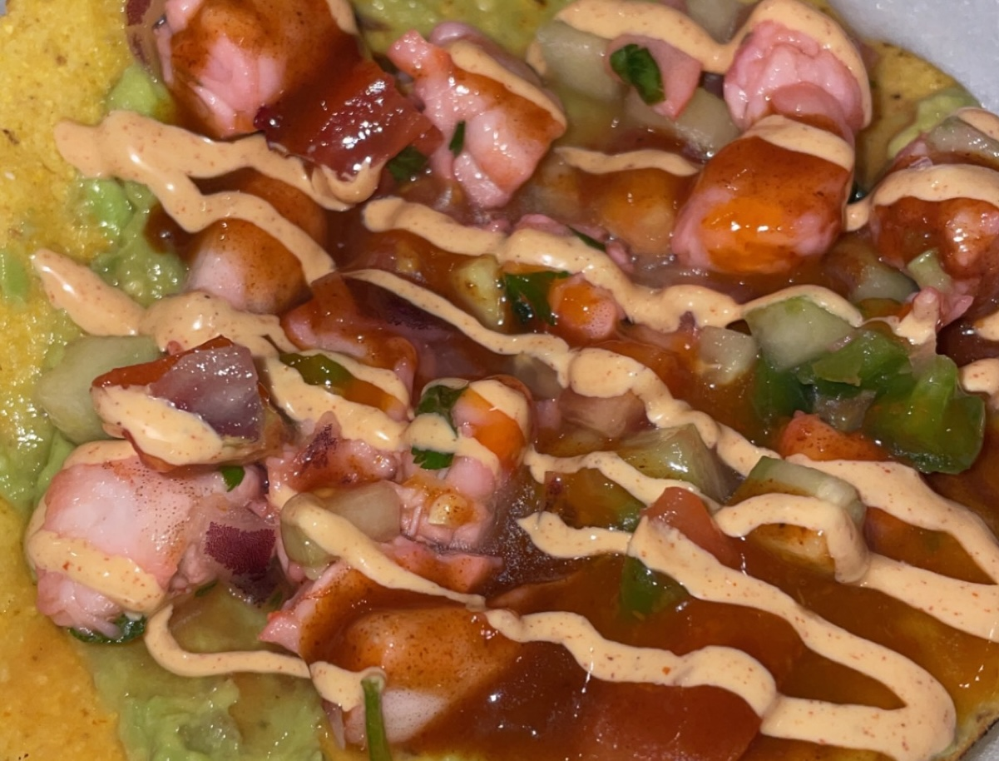

Home
Ceviche

Description
Ceviche is a sea food dish that could be made from shrimp or fish. In this recipe we will be making it with Shrimp. The flavors consist of lime, spicy, and savory!
Ingredients
- Shrimp
- Large Limes (about 8-15)
- Salt
- Red onion
- 1 Tomato
- 1 or 2 Serrano Peppers
- Cilantro (to preference)
- Clamato
- Avocados
- Tostadas
- Optional: Mayonnaise
- Optional: Marisco Hot Sauce
Steps
- Rinse and clean shrimp
- Cut shrimp into smaller pieces and add into bowl
- Cut red onion and add into bowl
- Cut limes and squeeze into bowl until covering shrimp
- Add a spoonful of salt into bowl and mix
- Cover bowl and refrigrate for 2 hours so the lime can cook the shrimp
- While we wait for the shrimp to cook, grab a separate bowl and chop the tomato, serrano pepper, and cilantro, and place the chopped veggies into there
- In a separate bowl, cut open the avocados and mash them into the bowl with lime
- When the two hours are up, take out the shrimp bowl from the fridge, dump the lime juice ONLY
- Once the lime juice has been dumped add in the veggies and clamato into the shrimp bowl
- Mix
- Now grab a tostada and smear some avocado onto the tostada and serve ceviche on top
- Top with lime, marisco hotsauces or mayonnaise of your choice and enjoy!